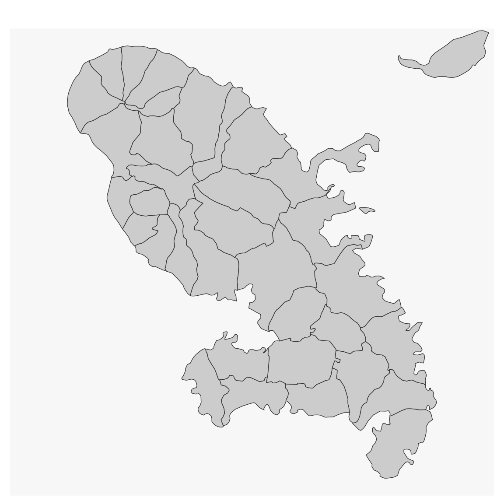
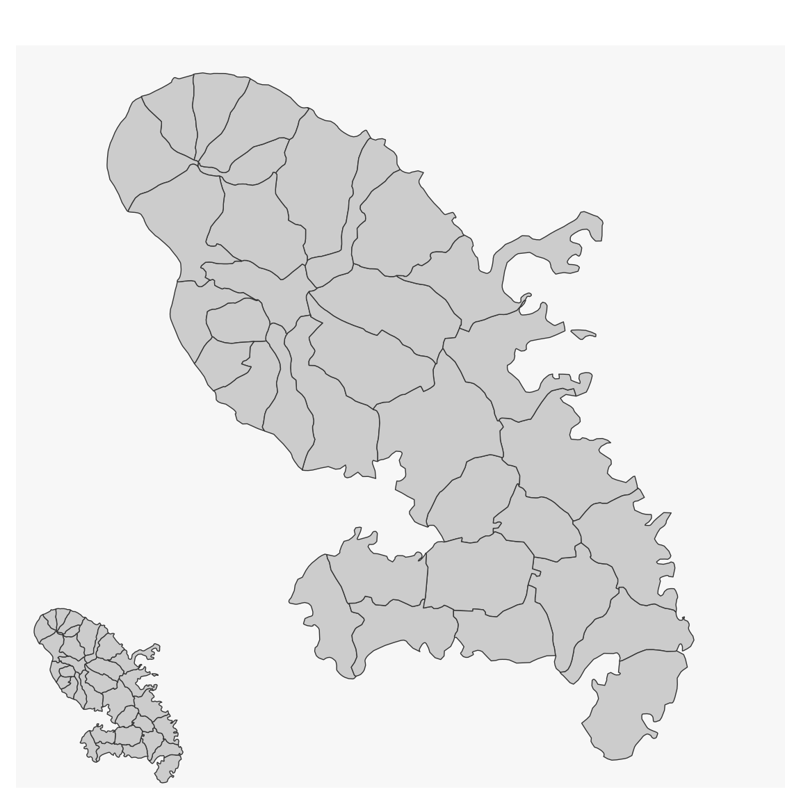

This function is used to add an inset map to the current map.
mf_inset_on(x, pos = "topright", cex = 0.2, fig) mf_inset_off()
| x | an sf object, or "worldmap" to use with mf_worldmap. |
|---|---|
| pos | position, one of "bottomleft", "left", "topleft", "top", "bottom", "bottomright", "right", "topright" |
| cex | share of the map width occupied by the inset |
| fig | coordinates of the inset region (in NDC, see in ?par()) |
No return value, an inset is initiated or closed.
If x is used (with pos and cex), the width/height ratio of the inset will
match the width/height ratio of x bounding box.
If fig is used, coordinates (xmin, xmax, ymin, ymax) are expressed as
fractions of the mapping space (i.e. excluding margins).
If map layers have to be plotted after the inset (i.e after mf_inset_off()),
please use add = TRUE.
It is not possible to plot an inset within an inset.
It is possible to plot anything (base plots) within the inset, not only map layers.
This function does not work when mfrow is used in par().
mf_inset_off()mf_inset_off()mf_inset_off()